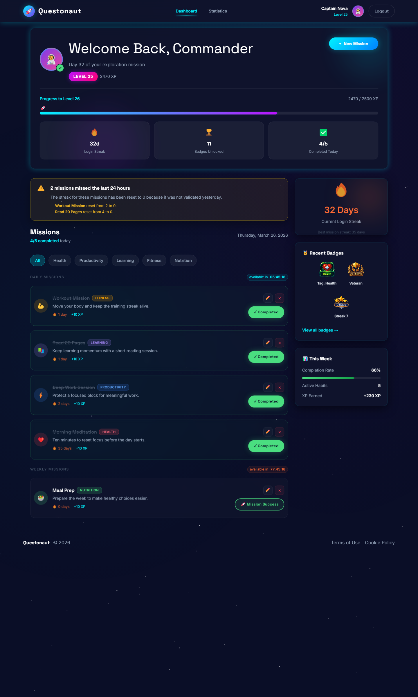
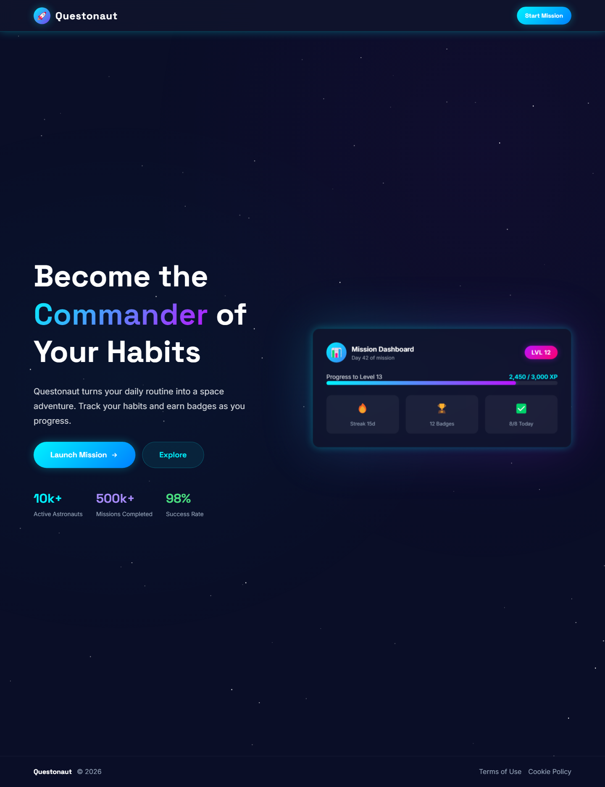
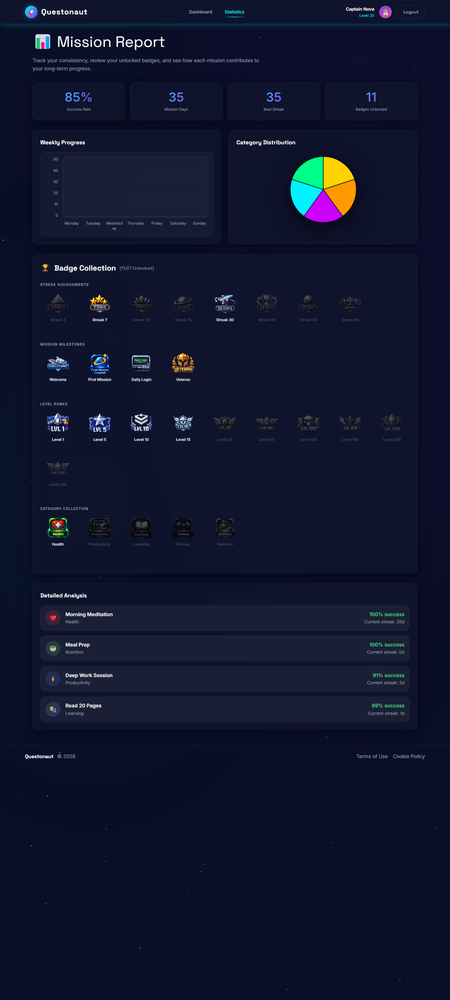

Simple daily loop
Create a mission, validate it once per day or week, and keep momentum visible.
Rails 8 MVP • GitHub Pages Showcase
Questonaut is a gamified habit tracker that transforms daily consistency into a space-themed mission loop: create habits, validate progress, earn XP, unlock badges, and review stats from one focused dashboard.

Why It Exists
Questonaut focuses on one simple promise: make habit tracking feel rewarding enough to stay consistent, without burying the user under a complex productivity system.
Create a mission, validate it once per day or week, and keep momentum visible.
XP, levels, streaks, and badges turn long-term consistency into something visible and motivating.
Rails 8, Devise, Hotwire, and a server-rendered architecture keep the product maintainable and fast.
Core Loop
Sign up, access your personal dashboard, and start building a routine around missions.
Define daily or weekly habits, organize them by category, and keep the scope focused.
Mark completed missions, update streaks, and collect the signals that reinforce consistency.
Check dashboard progress, unlocked badges, weekly summaries, and statistics in one place.
Visual Proof

Space-themed product identity with a direct path to sign up or log in.

Charts, badge collection, and detailed mission analysis help users read their consistency.
Badge Highlights
See More
The static showcase is designed for quick discovery. The repository remains the right place to inspect architecture, conventions, and implementation details.